Home / The Found Odyssey
Program · one book of the Odyssey per episode
The Found Odyssey
Homer's lines are asked by the CALL track and answered by archive speech; a drawn cast acts in graded archive plates. Each episode runs one formal experiment.
Episodes
 Episode 1 · NOBODYBook 9 in three minutes: a prompt box asks for the hero's name, the archive asks for "our young friend's", and Odysseus answers "Nobody."
Episode 1 · NOBODYBook 9 in three minutes: a prompt box asks for the hero's name, the archive asks for "our young friend's", and Odysseus answers "Nobody." Episode 2 · THE GUEST-GIFTThe Cyclops again, as a flashback at the Phaeacian feast, told by two tellers who remember it differently. The experiment: the recollection-image.
Episode 2 · THE GUEST-GIFTThe Cyclops again, as a flashback at the Phaeacian feast, told by two tellers who remember it differently. The experiment: the recollection-image. Episode 3 · THE RAFTBook 5 as one story, each act seen from the point of view of whoever is watching it: the gods on their television, Calypso, Poseidon, the sea.
Episode 3 · THE RAFTBook 5 as one story, each act seen from the point of view of whoever is watching it: the gods on their television, Calypso, Poseidon, the sea. Episode 4 · CIRCEBook 10 re-cut around one line per scene, the place where power shifts: the Laestrygonians, Circe, and the order to sail to the house of Death.
Episode 4 · CIRCEBook 10 re-cut around one line per scene, the place where power shifts: the Laestrygonians, Circe, and the order to sail to the house of Death. Episode 5 · THE BLOODBook 11 in grey, where the only colour is the blood in the trench and whichever shade has drunk it.
Episode 5 · THE BLOODBook 11 in grey, where the only colour is the blood in the trench and whichever shade has drunk it. Episode 6 · THE KNOTBook 12, built on hands that hold things: the mast, the cord, the oar. A held object is drawn inside the grip: palm, object, fingers, thumb.
Episode 6 · THE KNOTBook 12, built on hands that hold things: the mast, the cord, the oar. A held object is drawn inside the grip: palm, object, fingers, thumb. Episode 7 · THE LOOPBook 13 as a loop: seven agents try to land the sleeping man on Ithaca and fail, until a grip holds, Athena compiles, and the old beggar is put together part by part.
Episode 7 · THE LOOPBook 13 as a loop: seven agents try to land the sleeping man on Ithaca and fail, until a grip holds, Athena compiles, and the old beggar is put together part by part.The cast
one body, many costumes


Tests
 Drawn tests · NOBODY, THE SIRENS, ARGOSThe first three drawn shots: figures in archive plates, Homer asked by the CALL track and answered by archive speech.
Drawn tests · NOBODY, THE SIRENS, ARGOSThe first three drawn shots: figures in archive plates, Homer asked by the CALL track and answered by archive speech. Style labSix ways for the drawing to meet the footage, from clean ink to matched film stock, played over the same two beats.
Style labSix ways for the drawing to meet the footage, from clean ink to matched film stock, played over the same two beats. Drawn tests · second passThe chosen style applied to the three test shots.
Drawn tests · second passThe chosen style applied to the three test shots. Episode 2 · draft openingFirst cut of Episode 2's cold open and title.
Episode 2 · draft openingFirst cut of Episode 2's cold open and title.Process

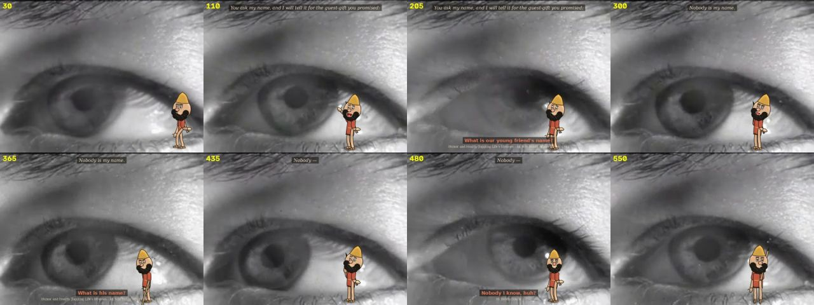

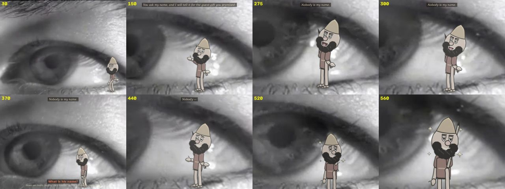


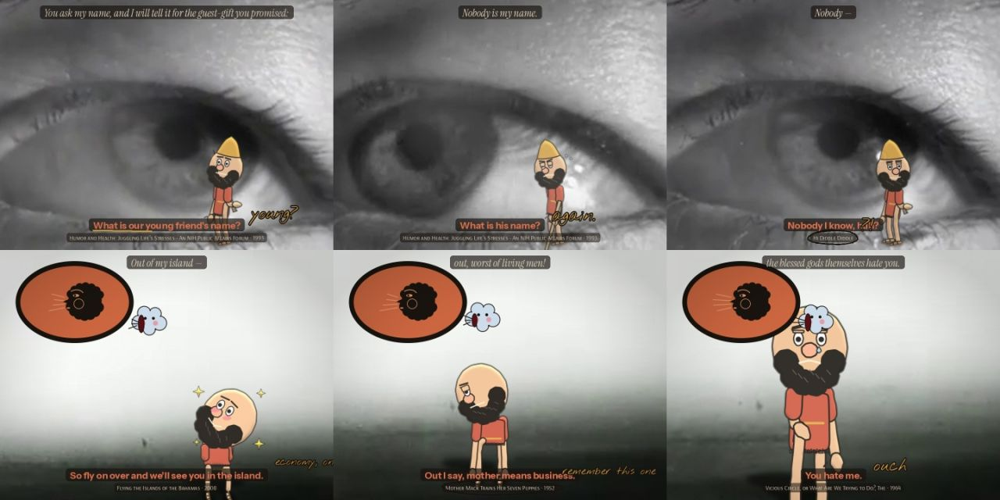
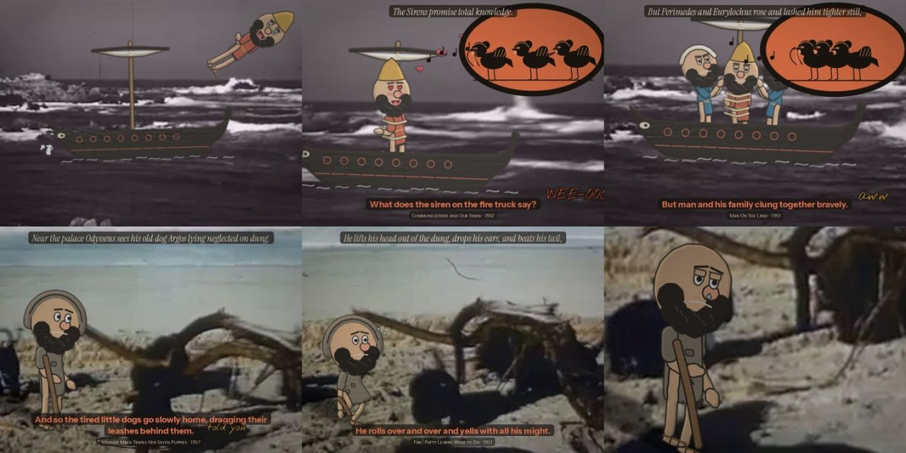


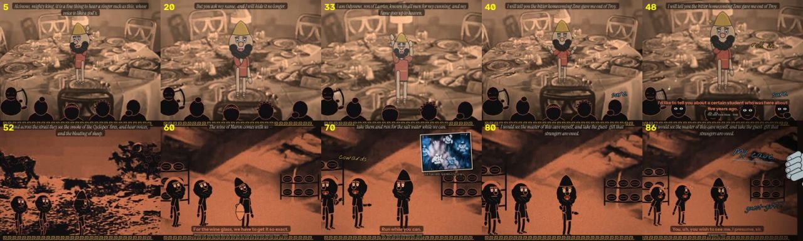

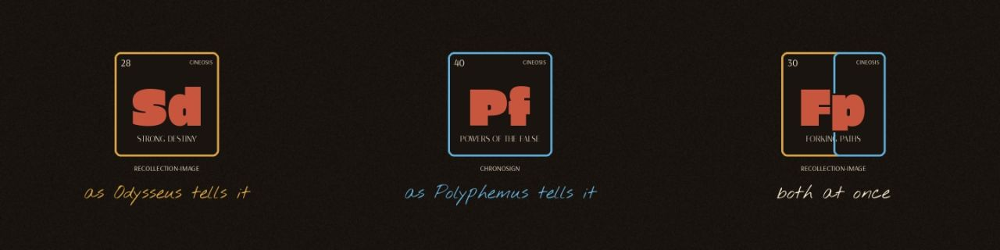


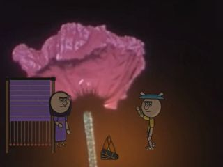
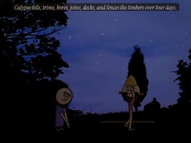

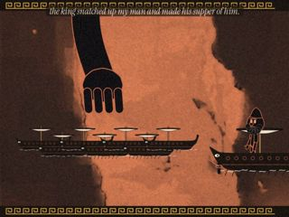

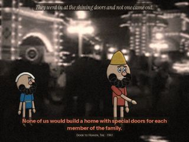
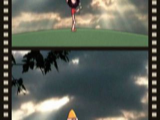
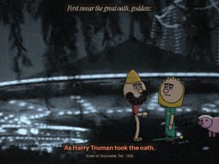


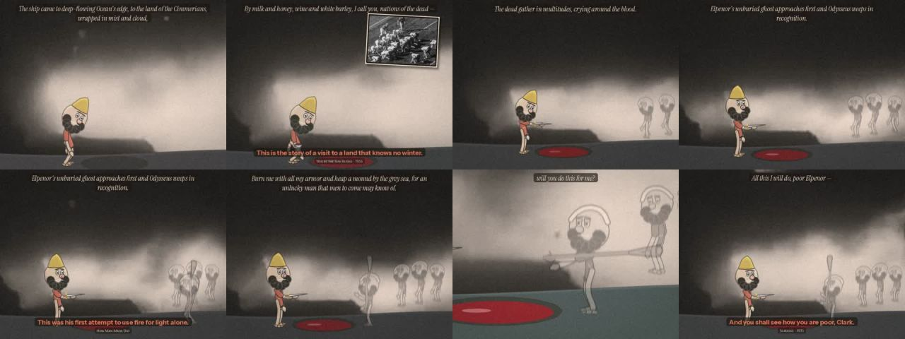
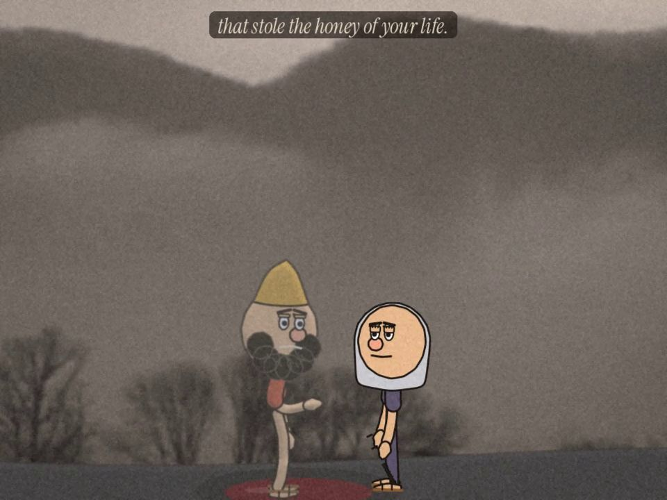
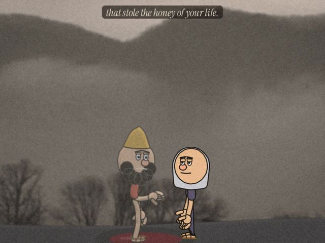
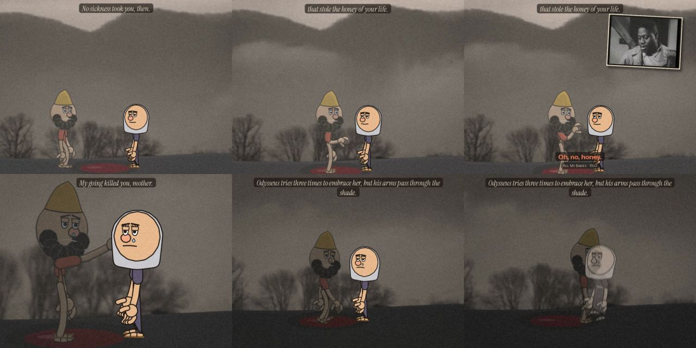
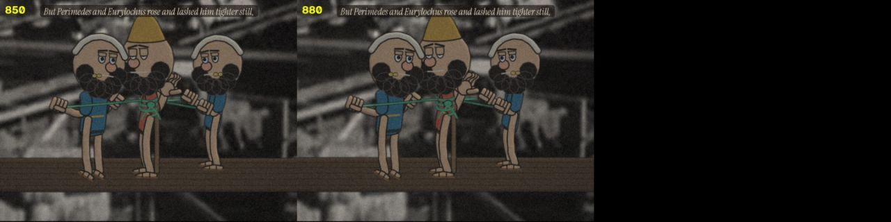
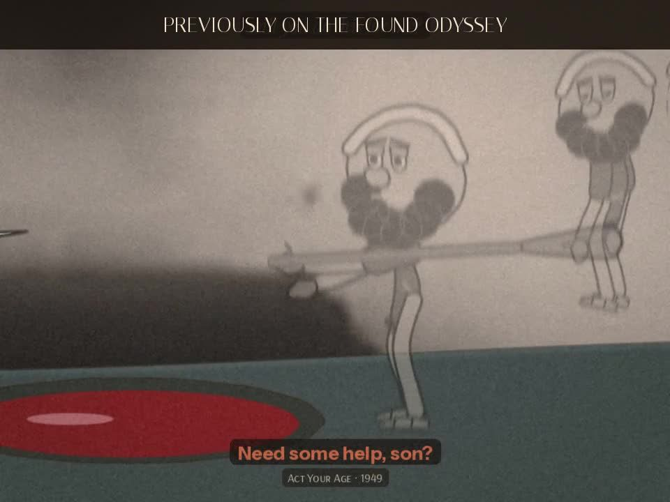
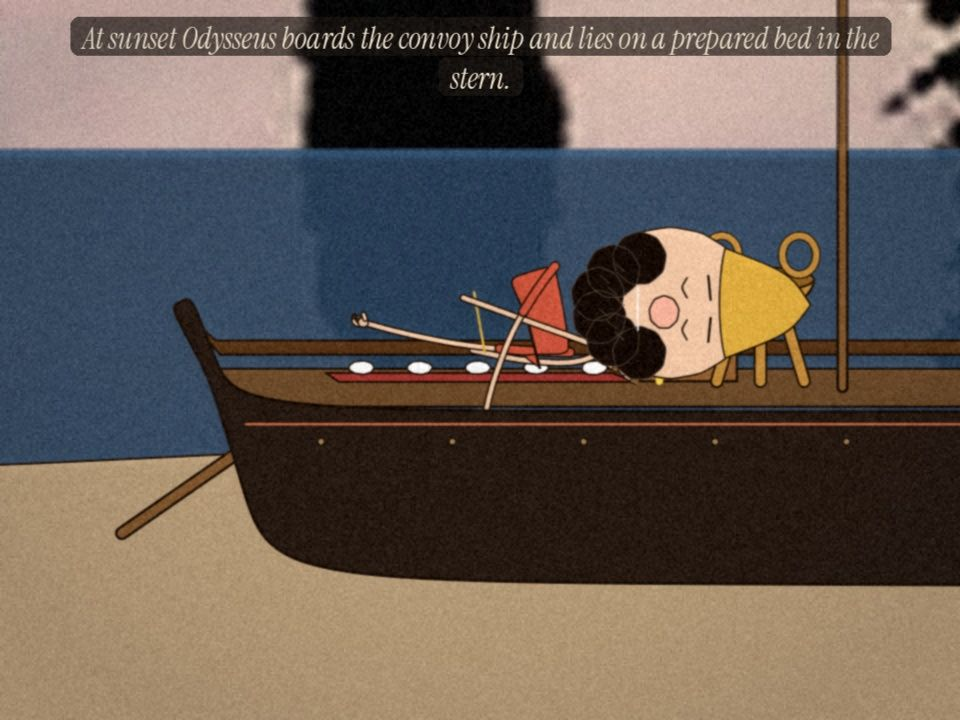
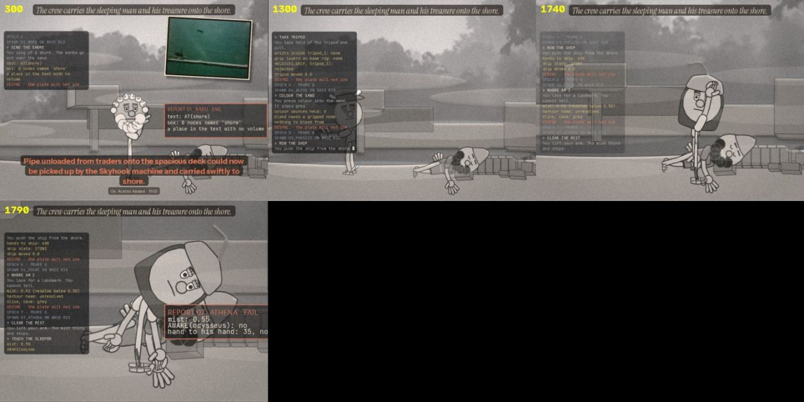
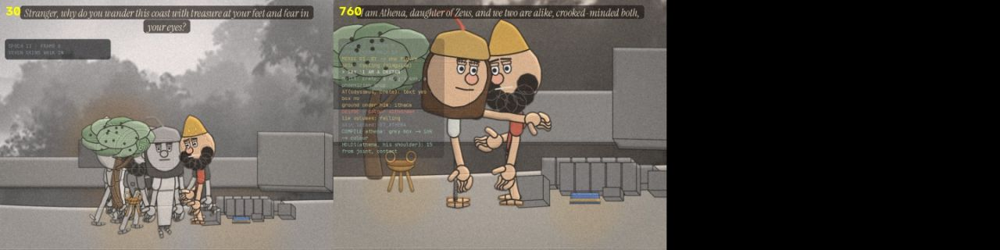
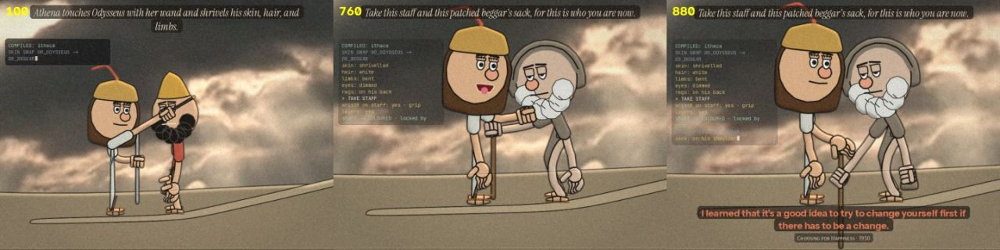
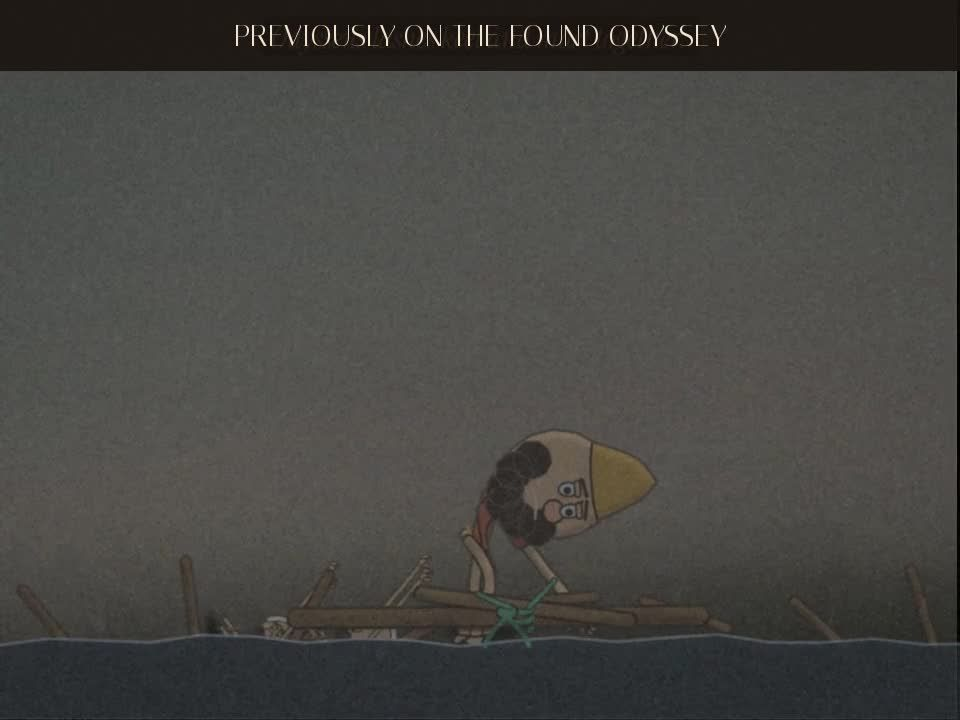
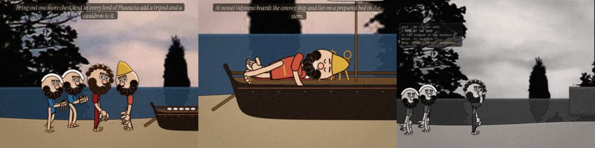
The method as a prompt: found-footage-animation.poml.